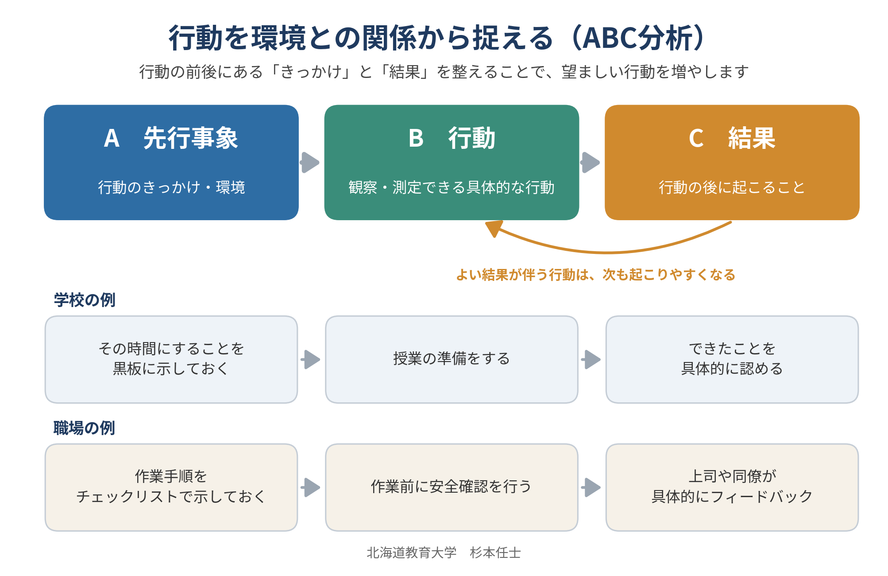
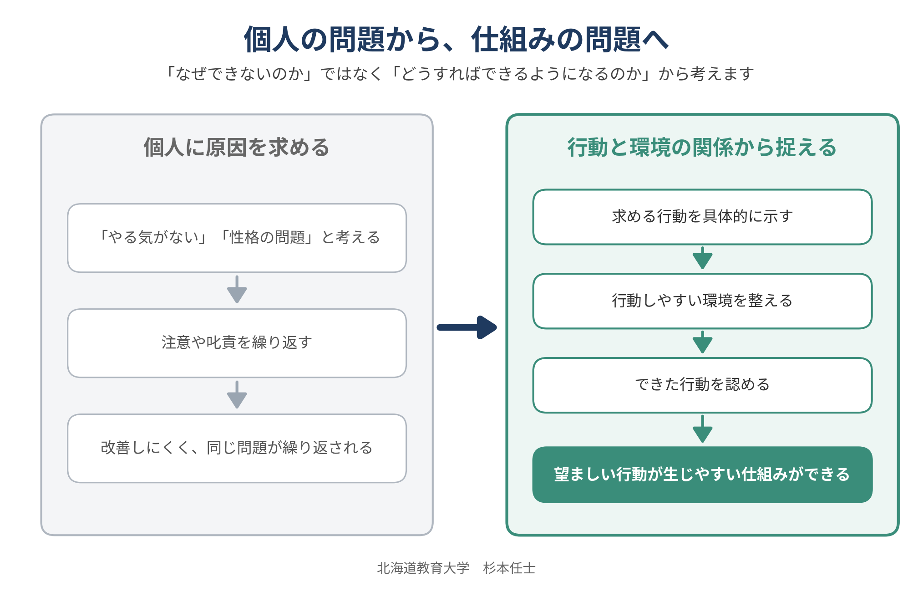
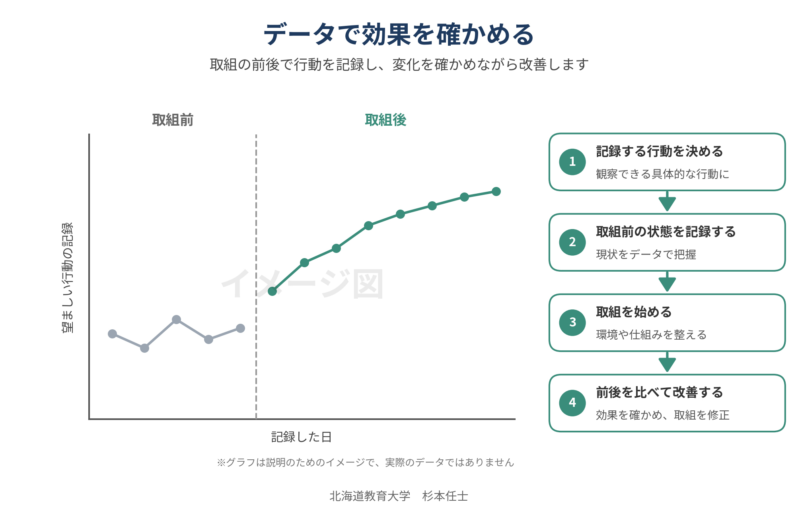
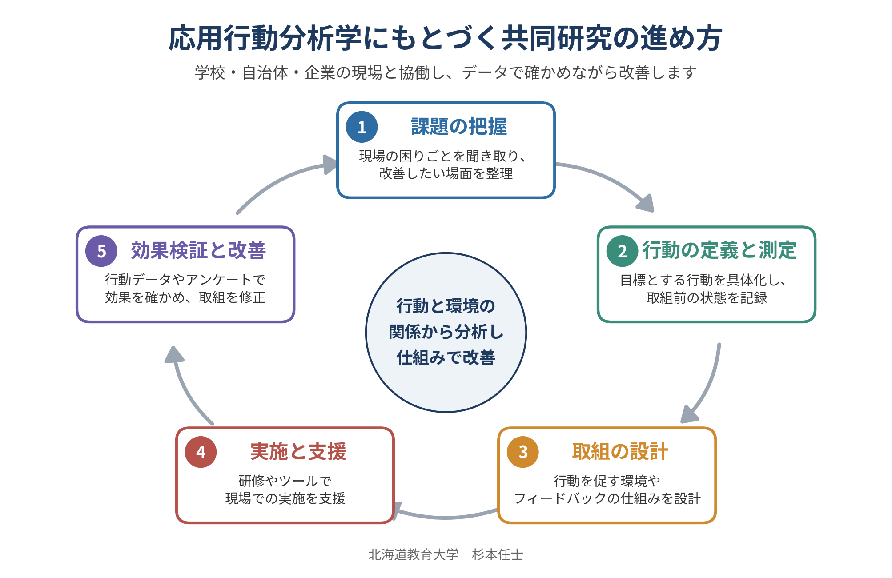
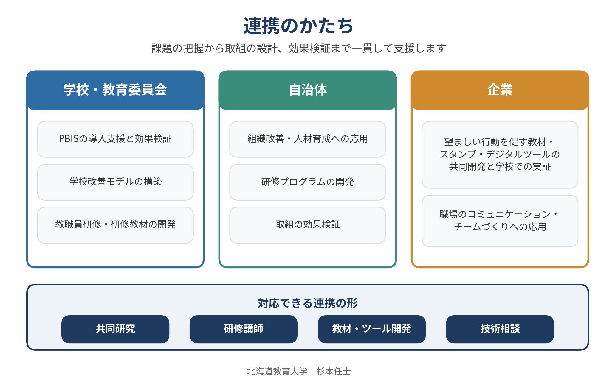

子どもの問題行動に注意や指導を重ねても、なかなか改善しないことがあります。私は、「なぜできないのか」ではなく「どうすればできるようになるのか」という視点から、応用行動分析学を活用した学校・学級づくりを研究しています。求める行動をわかりやすく示す、できた行動を認める、行動しやすい環境を整えるなど、個人の努力に頼らず、行動を取り巻く環境や仕組みに働きかけることが特徴です。
これまで、PBIS（ポジティブ行動支援）、集団随伴性、肯定的なフィードバックなどを学校現場に取り入れ、行動記録やアンケートを用いて効果を検証してきました。こうした考え方は学校だけでなく、企業や自治体における人材育成、職場のコミュニケーション、チームづくりなど、さまざまな組織の課題にも応用できます。



学校・学級へのPBIS導入支援と効果検証
自治体・教育委員会と連携した学校・組織改善
教職員や組織を対象とした研修プログラム・教材の開発
望ましい行動を促す教材、教具、デジタルツール等の共同開発・実証
企業・自治体における人材育成、コミュニケーション、チームづくりへの応用

行動上の課題を個人の意欲や性格だけに求めず、行動と環境との関係から分析し、具体的な改善策につなげます。学校現場での実践研究を通して、行動の測定、取組の設計、効果検証を行ってきました。自治体・学校との共同研究や研修講師に加え、企業との教材・ツール開発、組織改善に関する共同研究・技術相談にも対応できます。

PBIS・応用行動分析学を活用した学校・組織改善・研修開発に関するご相談を承っています。